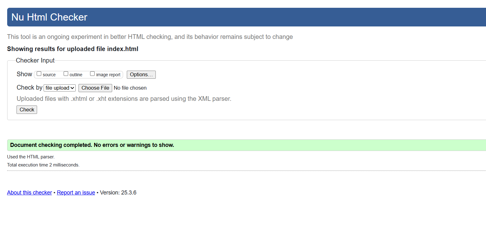
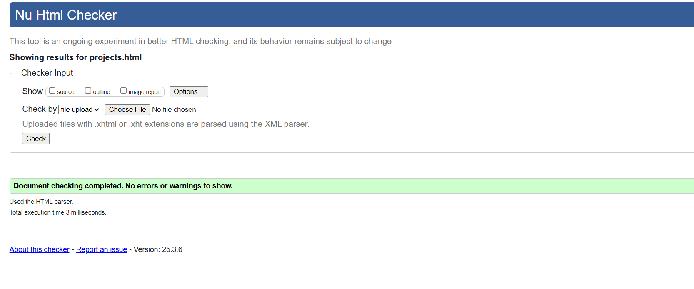
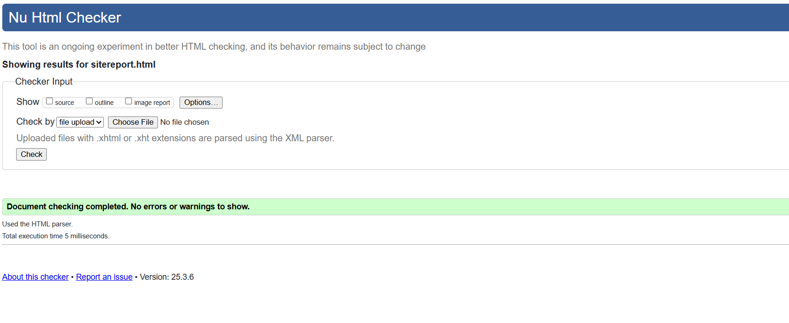
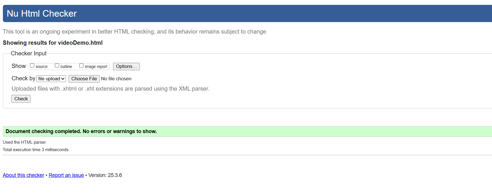
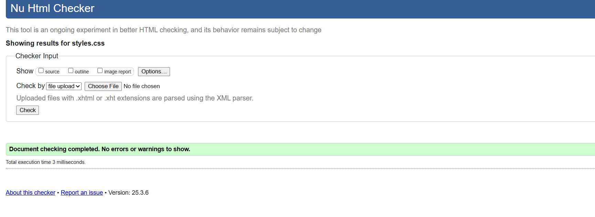

Site Report
Development Experience
My journey in programming and web development has been diverse and enriching. I started with Python, creating practical applications like a Book Ordering System using Tkinter GUI. This project taught me the fundamentals of object-oriented programming, user interface design, and database management.
I then developed utility applications like a BMI Calculator and a Light Year to Kilometer Converter, which helped me understand input validation, mathematical computations, and user experience design. These projects, though smaller in scope, were crucial in building my confidence with Python programming.
Most recently, I ventured into web development with this portfolio project. Learning HTML and CSS has been both challenging and rewarding. The transition from desktop applications to web development introduced me to new concepts like responsive design, CSS Grid, and modern web styling techniques.
Design Decisions
For the portfolio website, I chose a dark theme with #121212 as the background color and #1e1e1e for content areas. The primary accent color #0066cc provides good contrast and visual hierarchy. This color scheme reduces eye strain and creates a modern, professional look that's becoming increasingly popular in development environments.
The layout was designed with a focus on showcasing my projects effectively. I used CSS Grid for the projects page to create a responsive card layout that adapts to different screen sizes. The contact form was designed to be user-friendly with clear labels and appropriate spacing. The video demonstration page uses a responsive iframe to ensure proper video display across devices.
Typography choices were made with readability in mind. Segoe UI was selected as the primary font for its clean, modern appearance and excellent readability on both dark and light backgrounds. The spacing and hierarchy in the text elements help guide users through the content naturally.
Technical Implementation
The website is built using pure HTML5 and CSS3, demonstrating core web development skills without relying on frameworks. Key technical features include:
- • Responsive design using CSS Grid and Flexbox
- • Mobile-first approach with media queries
- • Semantic HTML structure for better accessibility
- • CSS animations for interactive elements
- • Optimized images and performance considerations
Validation Results
HTML Validation:
   CSS Validation:
Video Demonstration
You can view my video demonstration here: Portfolio Demo Video
References & Inspiration
- MDN Web Docs - For HTML and CSS documentation
- W3Schools - For tutorials and examples
- W3C Markup Validation Service - For HTML validation
- W3C CSS Validation Service - For CSS validation
- Python Tkinter Documentation - For GUI application development